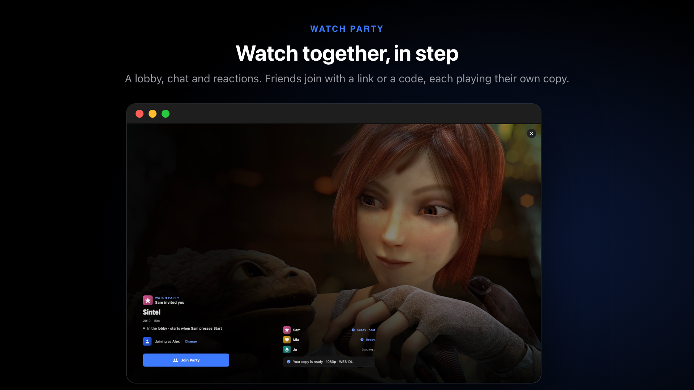
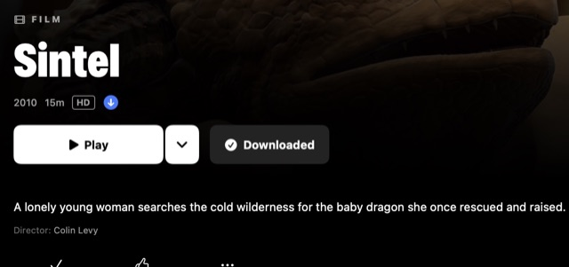
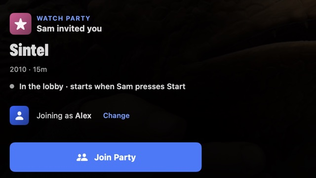
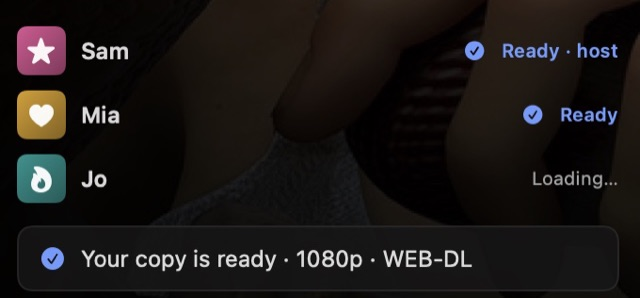

Watch Party
Watch in step with friends, each on their own device, with a lobby, chat and reactions.

How it works#
Nothing is streamed between you. Everyone plays their own copy from their own sources, and Bluebox keeps everyone in step. The party pauses while someone catches up.
So each guest needs the same title in their Bluebox: the same add-ons, a debrid service or the file. The invitation says whether their copy is ready.
What the host needs#
- Sync set up, and signed in.
- For friends on other accounts: in Supabase, turn on Allow anonymous sign-ins (once).
Technical details · Anonymous sign-ins and the party tables
In the Supabase dashboard, open Authentication › Sign In / Providers, turn on Allow anonymous sign-ins, and save. Guests then join without making an account. Without it they see “This Bluebox server doesn't let guests join.”
A party runs on the host's own Supabase project (their “Bluebox server”). If you set up your project by hand (with setup.sql), also run Backend/supabase/migrations/20261031000000_watch_together.sql in the SQL editor. Automatic setup adds it every time it runs, so running setup again with an access token works too.
Start a party#

On a title, open the ▾ next to Play (or right-click a poster) and choose Start a Party.- In the lobby, choose Share Invite…, or read out the 8-character code.
- When everyone's ready, start. There's a 3, 2, 1, and it plays for all.
Join a party#
With a link#
- Tap the invite link.
- Tap Open in Bluebox. No Bluebox yet? The page offers it for your device.

Check the invitation and tap Join Party.
Technical details · What's in the link
Share Invite… sends a web link to this site's join page. The server address and key are in the part of the link after the #, which stays in your browser and is never sent to GitHub.
With a code#
Choose Join a Party… from the profile menu (on the Mac also File › Join a Party…, ⇧⌘J) and type the code. Pasting an invite link fills it in. A code only finds parties on your own Bluebox server; for a friend's, use their link.
On the invitation#

- Who invited you, what's on, who's there and ready, and whether your copy is ready.
- Change next to Joining as sets a name and colour just for this party.
- A locked or ended party, or a host who isn't answering, shows Try Again.
During the party#
- Chat and reactionsBeside the video on Mac and iPad, over it on iPhone. On the Mac, ⌘/ opens it, ⌥1–⌥6 react.
- Party queueAdd titles from any poster's menu with Add to Party.
- Step AwayPauses just for you. Catch Up brings you back.
Leave Party is in the profile menu. With the chat closed, new messages show over the film for a few seconds (Settings › Playback › Show Party Messages Over the Video).
Host tools#
The host can Lock the Party, hand it over (Make … the Host) or End Party for Everyone.
If joining fails#
| Problem | Fix |
|---|---|
| “This invite is incomplete” | Part of the link was cut off. Ask for it again and open the whole link. |
| Guests can't join | The host turns on anonymous sign-ins (above). |
| Your copy isn't ready | Add the add-ons or debrid service the host uses, then Try Again. |
| The host isn't answering | The host's Bluebox must be open with the party running. |
| Only the code shows | The host's Bluebox is older than 1.2.4. Joining still works; everyone should update. |